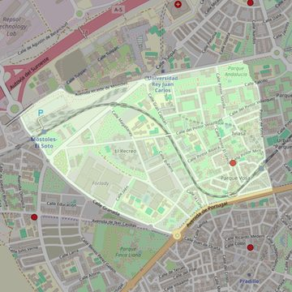

Nuestra Señora de la Consolación
- Arciprestazgo
- Móstoles
- Población
- Móstoles
- Dirección postal
- c/ del Pintor Miró, 3
- Código postal
- 28933
- Extensión
- 1,49 km² (149 ha)
- Teléfono
- 912 268 720
- Correo electrónico
- nsconsolacion-mostoles@diocesisgetafe.es
- Información demográfica
- De la parroquia · De la población (Móstoles) · Del arciprestazgo (Móstoles)


Descargar mapaLímites según decreto
"Partiendo de la confluencia de la Avenida de Portugal (antigua carretera N-V) con el Paseo de Goya, arrancan por el eje del Paseo de Goya (en dirección norte); siguen por el eje de la línea del ferrocarril (en dirección noreste); por el límite de los términos municipales de Móstoles y Alcorcón (en dirección noroeste); a través de una línea recta imaginaria, hasta la rotonda donde desemboca la calle Margarita en la Avenida Alcalde de Móstoles (en dirección oeste); por el eje de la Avenida Alcalde de Móstoles hasta el encuentro con la calle Tulipán (en dirección suroeste); por una línea recta imaginaria, hasta la carretera de Villaviciosa (en dirección oeste); por la carretera de Villaviciosa y la calle Granada (en dirección sureste); y por la Avenida de Portugal (en dirección noreste) hasta la confluencia con el Paseo de Goya, punto de partida". (Decreto de rectificación de límites de 27-5-99. Boletin de Junio-99, pág. 643)
Desarrollos urbanísticos previstos
- Móstoles: SUNC-4 «Granada-Corte Inglés»: 1.638 viviendas · en tramitación o en licitación
Las cifras y sus fuentes están en la ficha de cada desarrollo, en la sección «Previsión de desarrollos urbanísticos».